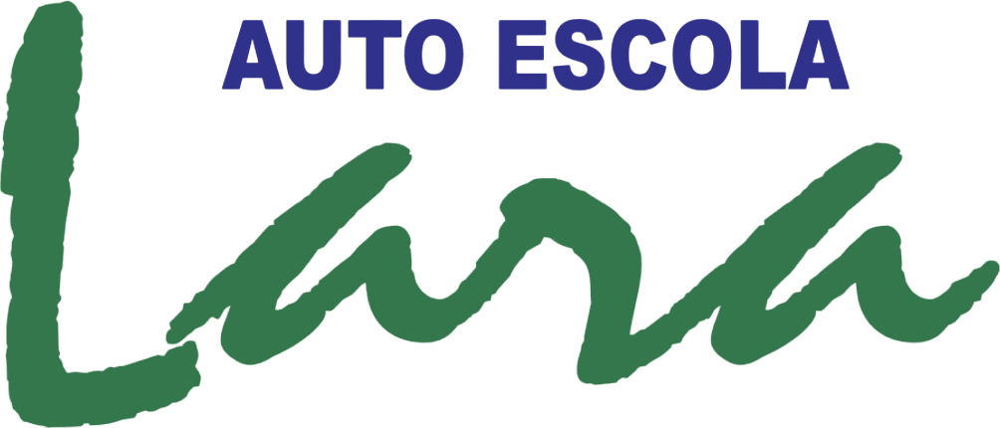

<!DOCTYPE html>
<html>
<head>
<meta charset="utf-8">
<style>
@font-face { font-family: "Montserrat"; src: url("assets/Montserrat.ttf"); font-weight: 100 900; }
@font-face { font-family: "Kaushan"; src: url("assets/Kaushan.ttf"); }
@font-face { font-family: "Archivo Black"; src: url("assets/ArchivoBlack.ttf"); }
:root { --azul: #30318A; --verde: #34774C; --pessego: #EDAF8A; --laranja: #D2683A; --areia: #FAEEE3; }
html, body { margin: 0; background: #000; }
#stage { position: relative; width: 1080px; overflow: hidden;
  background: linear-gradient(180deg, #FBF1E7 0%, #F7E4D4 55%, #F1D3BD 100%); }
.abs { position: absolute; left: 0; top: 0; will-change: transform, opacity, filter; }
.c { transform-origin: 50% 50%; }
#grain { position: absolute; inset: 0; opacity: .07; mix-blend-mode: multiply; pointer-events: none; }
.blob { position: absolute; border-radius: 50%; background: radial-gradient(circle, rgba(237,175,138,.28), rgba(237,175,138,0) 68%); }
#content { position: absolute; left: 0; width: 1080px; height: 1350px; }
.line { position: absolute; left: 0; width: 1080px; text-align: center; white-space: nowrap; }
.light { font-family: "Montserrat"; font-weight: 300; color: var(--azul); letter-spacing: -.01em; }
.bold { font-family: "Montserrat"; font-weight: 800; color: var(--azul); letter-spacing: -.01em; }
.brush { font-family: "Kaushan"; color: var(--verde); filter: url(#rough); }
.black { font-family: "Archivo Black"; color: var(--azul); letter-spacing: .005em; }
.pill { display: inline-block; background: var(--laranja); color: #FFF6EE; font-family: "Montserrat"; font-weight: 800;
  font-size: 54px; letter-spacing: .12em; padding: 24px 50px 22px 58px; border-radius: 60px; box-shadow: 0 10px 26px rgba(160,70,30,.25); }
.dot { position: absolute; width: 26px; height: 26px; margin: -13px 0 0 -13px; border-radius: 50%; background: #7FB98F; }
#stripe { position: absolute; left: 0; right: 0; bottom: 0; height: 10px; background: var(--laranja); }
</style>
</head>
<body>
<svg width="0" height="0" style="position:absolute">
  <filter id="rough" x="-5%" y="-10%" width="110%" height="120%">
    <feTurbulence type="fractalNoise" baseFrequency="0.035" numOctaves="2" seed="7" result="n"/>
    <feDisplacementMap in="SourceGraphic" in2="n" scale="5" xChannelSelector="R" yChannelSelector="G"/>
  </filter>
</svg>
<div id="stage">
  <div class="blob" id="b1" style="width:1300px;height:1300px"></div>
  <div class="blob" id="b2" style="width:1100px;height:1100px"></div>
  <svg id="grain" width="100%" height="100%"><filter id="g"><feTurbulence type="fractalNoise" baseFrequency="0.9" numOctaves="2" stitchTiles="stitch"/></filter><rect width="100%" height="100%" filter="url(#g)"/></svg>
  <div id="dots"></div>
  <div id="wheelWrap" class="abs"></div>
  <div id="content"></div>
  <div id="stripe"></div>
</div>
<script>
const P = new URLSearchParams(location.search);
const FMT = P.get('fmt') || 'feed';
const W = 1080, H = FMT === 'reels' ? 1920 : 1350;
const SC = FMT === 'reels' ? 1.12 : 1;   // no Reels o conteúdo cresce um pouco pra ocupar a tela vertical
const OY = (H - 1350 * SC) / 2 + (FMT === 'reels' ? 60 : 0);
const stage = document.getElementById('stage');
stage.style.height = H + 'px';
document.getElementById('content').style.top = OY + 'px';
document.getElementById('content').style.transform = `scale(${SC})`;
document.getElementById('content').style.transformOrigin = '50% 0';

const clamp = (x, a = 0, b = 1) => Math.max(a, Math.min(b, x));
const eo = p => 1 - Math.pow(1 - clamp(p), 3);
const ei = p => Math.pow(clamp(p), 3);
const eio = p => { p = clamp(p); return p < .5 ? 4*p*p*p : 1 - Math.pow(-2*p + 2, 3) / 2; };
const eback = (p, s = 1.7) => { p = clamp(p); const c3 = s + 1; return 1 + c3*Math.pow(p - 1, 3) + s*Math.pow(p - 1, 2); };
const prog = (t, t0, d) => clamp((t - t0) / d);

function mk(html, parent = document.getElementById('content'), cls = 'abs') {
  const d = document.createElement('div'); d.className = cls; d.innerHTML = html; parent.appendChild(d); return d;
}
function set(n, { x = 0, y = 0, s = 1, r = 0, o = 1, b = 0, ax = '-50%', ay = '-50%' } = {}) {
  if (o <= 0.002) { n.style.display = 'none'; return; }
  n.style.display = 'block';
  n.style.opacity = o.toFixed(3);
  n.style.transform = `translate(${x.toFixed(2)}px, ${y.toFixed(2)}px) translate(${ax}, ${ay}) scale(${s.toFixed(4)}) rotate(${r.toFixed(2)}deg)`;
  const base = n.dataset.f || '';
  n.style.filter = (b > .05 ? `blur(${b.toFixed(2)}px) ` : '') + base || 'none';
}
// entrada (sobe com blur) e saída (sobe e some)
function inOut(t, tin, tout, d = .45, dy = 40) {
  const p = eo(prog(t, tin, d)), q = ei(prog(t, tout, .35));
  return { o: Math.min(clamp(p * 1.4), 1 - q), dy: (1 - p) * dy - q * 60, b: (1 - p) * 12 + q * 10 };
}

/* ---------- velocímetro (cena 1) ---------- */
const GX = 540, GY = 560, GR = 330, VMAX = 30;
const ang = v => (135 + 270 * v / VMAX) * Math.PI / 180;
function gaugeSVG() {
  const pt = (v, r) => [GR + 40 + r * Math.cos(ang(v)), GR + 40 + r * Math.sin(ang(v))];
  const arc = (r) => { const [x0, y0] = pt(0, r), [x1, y1] = pt(VMAX, r); return `M ${x0} ${y0} A ${r} ${r} 0 1 1 ${x1} ${y1}`; };
  let ticks = '', labels = '';
  for (let v = 0; v <= VMAX; v++) {
    const major = v % 5 === 0;
    const [x0, y0] = pt(v, GR - 52), [x1, y1] = pt(v, GR - (major ? 92 : 72));
    ticks += `<line class="tk" data-v="${v}" x1="${x0}" y1="${y0}" x2="${x1}" y2="${y1}" stroke="#30318A" stroke-opacity="${major ? .9 : .4}" stroke-width="${major ? 8 : 4}" stroke-linecap="round"/>`;
    if (major) { const [lx, ly] = pt(v, GR - 135); labels += `<text class="tk" data-v="${v}" x="${lx}" y="${ly + 14}" text-anchor="middle" font-family="Montserrat" font-weight="700" font-size="40" fill="#30318A" fill-opacity=".8">${v}</text>`; }
  }
  const L = 2 * Math.PI * (GR - 18) * 0.75;
  return `<svg width="${2 * GR + 80}" height="${2 * GR + 80}" viewBox="0 0 ${2 * GR + 80} ${2 * GR + 80}">
    <path d="${arc(GR - 18)}" fill="none" stroke="#30318A" stroke-opacity=".12" stroke-width="30" stroke-linecap="round"/>
    <path id="gProg" d="${arc(GR - 18)}" fill="none" stroke="#34774C" stroke-width="30" stroke-linecap="round" stroke-dasharray="${L}" stroke-dashoffset="${L}" data-l="${L}"/>
    ${ticks}${labels}
    <g id="needle"><path d="M ${GR + 40 - 13} ${GR + 40} L ${GR + 40} ${GR + 40 - 268} L ${GR + 40 + 13} ${GR + 40} Z" fill="#D2683A"/></g>
    <circle cx="${GR + 40}" cy="${GR + 40}" r="40" fill="#30318A"/><circle cx="${GR + 40}" cy="${GR + 40}" r="13" fill="#FBF1E7"/>
  </svg>`;
}

/* ---------- volante (cenas 2-4) ---------- */
function wheelSVG() {
  const R = 500, c = 560, hy = c + 30;
  // pegada: gomos escuros no aro
  let grip = '';
  for (let k = 0; k < 64; k++) { const a0 = k / 64 * Math.PI * 2;
    grip += `<line x1="${c + (R - 30) * Math.cos(a0)}" y1="${c + (R - 30) * Math.sin(a0)}" x2="${c + (R + 30) * Math.cos(a0)}" y2="${c + (R + 30) * Math.sin(a0)}" stroke="#1E1F5E" stroke-opacity=".35" stroke-width="5"/>`; }
  return `<svg width="${2 * c}" height="${2 * c}" viewBox="0 0 ${2 * c} ${2 * c}" style="overflow:visible">
    <defs>
      <linearGradient id="rim" x1="0" y1="0" x2="1" y2="1"><stop offset="0" stop-color="#4547B4"/><stop offset=".55" stop-color="#30318A"/><stop offset="1" stop-color="#1E1F5E"/></linearGradient>
      <linearGradient id="pad" x1="0" y1="0" x2="0" y2="1"><stop offset="0" stop-color="#3A3CA0"/><stop offset="1" stop-color="#23246B"/></linearGradient>
      <filter id="sh" x="-20%" y="-20%" width="140%" height="140%"><feDropShadow dx="0" dy="18" stdDeviation="22" flood-color="#5A2A10" flood-opacity=".28"/></filter>
    </defs>
    <g filter="url(#sh)">
      <!-- raios -->
      <path d="M ${c - R + 20} ${hy - 10} C ${c - 300} ${hy - 30}, ${c - 200} ${hy - 70}, ${c - 120} ${hy - 60}" fill="none" stroke="#2A2B7C" stroke-width="110" stroke-linecap="round"/>
      <path d="M ${c + R - 20} ${hy - 10} C ${c + 300} ${hy - 30}, ${c + 200} ${hy - 70}, ${c + 120} ${hy - 60}" fill="none" stroke="#2A2B7C" stroke-width="110" stroke-linecap="round"/>
      <path d="M ${c} ${hy + 60} L ${c} ${c + R - 10}" stroke="#2A2B7C" stroke-width="120" stroke-linecap="round"/>
      <!-- aro -->
      <circle cx="${c}" cy="${c}" r="${R}" fill="none" stroke="url(#rim)" stroke-width="86"/>
      ${grip}
      <path d="M ${c - R * .92} ${c - R * .38} A ${R} ${R} 0 0 1 ${c - R * .2} ${c - R * .98}" fill="none" stroke="#FFFFFF" stroke-opacity=".22" stroke-width="12" stroke-linecap="round"/>
      <!-- miolo (buzina) -->
      <rect x="${c - 175}" y="${hy - 120}" width="350" height="250" rx="70" fill="url(#pad)"/>
      <rect x="${c - 135}" y="${hy - 85}" width="270" height="180" rx="52" fill="#34774C"/>
      <image href="assets/lara_verde.png" x="${c - 100}" y="${hy - 47}" width="200" height="86" style="filter: brightness(0) invert(1)" opacity=".95"/>
    </g>
  </svg>`;
}
function dashSVG() {
  // painel do carro à direita, com duas saídas de ar
  const vent = (x, y, r) => `<circle cx="${x}" cy="${y}" r="${r}" fill="#22236A" stroke="#FBF1E7" stroke-opacity=".85" stroke-width="12"/>
      ${[-.5, -.17, .17, .5].map(k => `<line x1="${x - r * .78}" y1="${y + k * r * 1.1}" x2="${x + r * .78}" y2="${y + k * r * 1.1}" stroke="#FBF1E7" stroke-opacity=".35" stroke-width="7" stroke-linecap="round"/>`).join('')}`;
  return `<svg width="620" height="330" viewBox="0 0 620 330">
    <path d="M 0 330 L 0 210 C 60 120, 200 70, 620 40 L 620 330 Z" fill="#30318A"/>
    <path d="M 20 200 C 90 120, 220 82, 620 56" fill="none" stroke="#FFFFFF" stroke-opacity=".14" stroke-width="8"/>
    ${vent(330, 205, 78)}${vent(520, 190, 78)}
  </svg>`;
}

/* ---------- monta ---------- */
let N = {};
function build() {
  const C = document.getElementById('content');
  // fundo
  N.b1 = document.getElementById('b1'); N.b2 = document.getElementById('b2');
  // pontinhos (3 fileiras, como na referência)
  const dots = document.getElementById('dots');
  N.dots = [];
  const rows = [[150, 1180, 760], [430, 1180, 850], [700, 1180, 940]];
  rows.forEach(([x0, x1, y], r) => {
    for (let x = x0, k = 0; x <= x1; x += 92, k++) {
      const d = document.createElement('div'); d.className = 'dot'; dots.appendChild(d);
      N.dots.push({ n: d, x, y: y * SC + OY, r, k });
    }
  });
  // logo pequeno (cena 1)
  N.logoS = mk(``, C);
  // velocímetro
  N.gauge = mk(gaugeSVG(), C);
  N.gProg = N.gauge.querySelector('#gProg'); N.needle = N.gauge.querySelector('#needle');
  N.ticks = [...N.gauge.querySelectorAll('.tk')];
  N.read = mk(`<div class="black" style="font-size:210px;line-height:1">19</div>`, C);
  N.readTxt = N.read.firstChild;
  N.nov = mk(`<div class="bold" style="font-size:40px;letter-spacing:.34em;color:var(--verde)">NOVEMBRO</div>`, C);
  N.diaDa = mk(`<div class="brush" style="font-size:96px;line-height:1">Dia da</div>`, C); N.diaDa.dataset.f = 'url(#rough)';
  N.diaDa.firstChild.style.filter = 'none';
  N.autoescola = mk(`<div class="black" style="font-size:122px;line-height:1">AUTOESCOLA</div>`, C);
  // cena 2
  N.icon1 = mk(`<svg width="230" height="170" viewBox="0 0 230 170">
      <rect x="8" y="12" width="190" height="128" rx="18" fill="#34774C"/>
      <rect x="128" y="34" width="50" height="62" rx="8" fill="#FBF1E7"/><circle cx="153" cy="56" r="11" fill="#34774C"/><path d="M 136 92 q 17 -26 34 0" fill="#34774C"/>
      <rect x="28" y="38" width="80" height="12" rx="6" fill="#FBF1E7"/><rect x="28" y="60" width="62" height="10" rx="5" fill="#FBF1E7" opacity=".75"/><rect x="28" y="80" width="72" height="10" rx="5" fill="#FBF1E7" opacity=".75"/>
      <rect x="28" y="112" width="150" height="8" rx="4" fill="#FBF1E7" opacity=".45"/>
      <circle cx="196" cy="132" r="30" fill="#D2683A"/><path d="M 182 132 l 10 10 l 18 -20" fill="none" stroke="#FFF6EE" stroke-width="8" stroke-linecap="round" stroke-linejoin="round"/>
    </svg>`, C);
  N.s2 = [
    mk(`<div class="light" style="font-size:84px">Toda CNH</div>`, C),
    mk(`<div class="light" style="font-size:84px">começa com a</div>`, C),
    mk(`<div class="brush" style="font-size:124px">primeira aula.</div>`, C),
  ];
  // cena 3
  N.icon2 = mk(`<svg width="170" height="160" viewBox="0 0 170 160"><path d="M85 148 C 30 110 6 80 6 50 C 6 24 26 6 50 6 C 66 6 78 14 85 28 C 92 14 104 6 120 6 C 144 6 164 24 164 50 C 164 80 140 110 85 148 Z" fill="#D2683A"/>
      <path d="M 44 46 q 6 -18 26 -18" fill="none" stroke="#FFF6EE" stroke-opacity=".55" stroke-width="9" stroke-linecap="round"/></svg>`, C);
  N.s3 = [
    mk(`<div class="light" style="font-size:72px">Obrigado a cada aluno</div>`, C),
    mk(`<div class="light" style="font-size:72px">e instrutor que faz parte</div>`, C),
    mk(`<div class="brush" style="font-size:112px">da nossa história.</div>`, C),
  ];
  // cena 4: logo grande + data
  N.logoA = mk(``, C);
  N.logoL = mk(`<div style="width:760px;height:326px;position:relative;overflow:hidden" id="lw"></div>`, C);
  N.lw = N.logoL.querySelector('#lw');
  N.feliz = mk(`<div class="bold" style="font-size:58px">Feliz Dia da Autoescola!</div>`, C);
  N.pill = mk(`<div class="pill">19 DE NOVEMBRO</div>`, C);
  // volante
  N.dash = mk(dashSVG(), document.getElementById('stage'));
  document.getElementById('stage').insertBefore(N.dash, document.getElementById('wheelWrap'));
  N.wheel = document.getElementById('wheelWrap'); N.wheel.innerHTML = wheelSVG();
  [N.s2, N.s3].flat().forEach(n => n.firstChild.style.whiteSpace = 'nowrap');
}

/* ---------- tempo ---------- */
const T = { sweep0: .4, sweep1: 1.5, title: 1.8, out1: 2.95, s2: 3.35, out2: 6.55, s3: 6.75, out3: 9.3, s4: 9.55, end: 12.0 };

function render(t) {
  // fundo vivo
  set(N.b1, { x: 200 + 60 * Math.sin(t * .5), y: 260 + OY + 40 * Math.cos(t * .4), ax: '-50%', ay: '-50%' });
  set(N.b2, { x: 900 + 50 * Math.cos(t * .45), y: 1050 + OY + 60 * Math.sin(t * .35) });

  // ===== cena 1: velocímetro marca 19 =====
  const g = prog(t, 0, .5), gOut = ei(prog(t, T.out1, .4));
  set(N.logoS, { x: 540, y: 108, o: eo(prog(t, .15, .4)) * (1 - gOut), b: (1 - eo(prog(t, .15, .4))) * 8 + gOut * 8, s: 1 - .1 * gOut });
  set(N.gauge, { x: GX, y: GY - 60 * gOut, s: (.86 + .14 * eback(g)) * (1 - .12 * gOut), o: clamp(g * 2) * (1 - gOut), b: (1 - eo(g)) * 10 + gOut * 12 });
  N.ticks.forEach(el => { const v = +el.dataset.v; el.style.opacity = eo(prog(t, .05 + v * .012, .2)); });
  const sp = prog(t, T.sweep0, T.sweep1 - T.sweep0);
  const v = 19 * eback(sp, 1.1);   // ponteiro com leve passada do 19
  N.needle.setAttribute('transform', `rotate(${(270 * v / VMAX - 135).toFixed(2)} ${GR + 40} ${GR + 40})`);
  N.gProg.setAttribute('stroke-dashoffset', (N.gProg.dataset.l * (1 - clamp(v / VMAX))).toFixed(1));
  N.readTxt.textContent = String(Math.max(0, Math.min(19, Math.round(v)))).padStart(2, '0');
  const bump = prog(t, T.sweep1, .35);
  set(N.read, { x: GX, y: GY + 215 - 60 * gOut, s: (1 + .12 * Math.sin(Math.PI * bump)) * (1 - .12 * gOut), o: clamp(prog(t, .3, .3) * 1.5) * (1 - gOut), b: gOut * 12 });
  const nv = eo(prog(t, T.sweep1 + .05, .4));
  set(N.nov, { x: GX, y: GY + 335 + (1 - nv) * 30 - 60 * gOut, o: nv * (1 - gOut), b: (1 - nv) * 10 + gOut * 10 });
  const d1 = prog(t, T.title - .1, .4), d2 = prog(t, T.title + .08, .38);
  set(N.diaDa, { x: 540 - 245, y: 1075 + (1 - eo(d1)) * 30 - 60 * gOut, o: clamp(d1 * 2) * (1 - gOut), b: (1 - eo(d1)) * 10 + gOut * 10, r: -6 });
  set(N.autoescola, { x: 540, y: 1180 - 60 * gOut, s: (.6 + .4 * eback(d2, 2)) * (1 - .05 * gOut), o: clamp(d2 * 3) * (1 - gOut), b: (1 - eo(d2 * 1.4)) * 14 + gOut * 10 });

  // ===== volante + pontinhos (cenas 2-4) =====
  const wIn = prog(t, T.out1 + .05, .7);
  const sway = 7 * Math.sin((t - T.s2) * 2 * Math.PI / 3.4) * clamp((t - T.s2) / .8);
  const wy = H - 1350 + 1290;   // centro do volante, ancorado embaixo
  set(N.wheel, { x: 230, y: wy + (1 - eback(wIn, 1.2)) * 700, r: -28 * (1 - eo(wIn)) + sway, o: clamp(wIn * 3) });
  const dIn = eo(prog(t, T.out1 + .2, .6));
  set(N.dash, { x: 1080, y: H + (1 - dIn) * 340, ax: '-100%', ay: '-100%', o: clamp(dIn * 3) });
  const dotsOut = eio(prog(t, T.out3, .5));
  N.dots.forEach(D => {
    const p = prog(t, T.s2 + .25 + D.r * .12 + D.k * .028, .32);
    const drift = ((t - T.s2) * 14) % 92;
    set(D.n, { x: D.x - drift * clamp(t - T.s2 - 1.2), y: D.y + 150 * dotsOut, s: eback(p, 2.2) * (1 - .25 * dotsOut), o: clamp(p * 3) * (1 - .6 * dotsOut), ax: '0px', ay: '0px' });
  });

  // ===== cena 2: "Toda CNH começa com a primeira aula." =====
  {
    const io = inOut(t, T.s2, T.out2, .45, 30);
    const ib = prog(t, T.s2, .45);
    set(N.icon1, { x: 540, y: 205 + io.dy, s: .6 + .4 * eback(ib, 2), o: io.o, b: io.b });
    const ys = [372, 470, 600], starts = [T.s2 + .15, T.s2 + .38, T.s2 + .7];
    N.s2.forEach((n, k) => { const s = inOut(t, starts[k], T.out2 + k * .06, k === 2 ? .5 : .45, 50);
      const sc = k === 2 ? .7 + .3 * eback(prog(t, starts[k], .5), 2) : 1;
      set(n, { x: 540, y: ys[k] + s.dy, o: s.o, b: s.b, s: sc, r: k === 2 ? -3 : 0 }); });
  }
  // ===== cena 3: agradecimento =====
  {
    const io = inOut(t, T.s3, T.out3, .45, 30);
    set(N.icon2, { x: 540, y: 200 + io.dy, s: (.5 + .5 * eback(prog(t, T.s3, .5), 2.4)) * (1 + .05 * Math.sin((t - T.s3) * 7) * clamp(t - T.s3 - .5)), o: io.o, b: io.b });
    const ys = [368, 458, 590], starts = [T.s3 + .15, T.s3 + .36, T.s3 + .66];
    N.s3.forEach((n, k) => { const s = inOut(t, starts[k], T.out3 + k * .06, k === 2 ? .5 : .45, 50);
      const sc = k === 2 ? .7 + .3 * eback(prog(t, starts[k], .5), 2) : 1;
      set(n, { x: 540, y: ys[k] + s.dy, o: s.o, b: s.b, s: sc, r: k === 2 ? -3 : 0 }); });
  }
  // ===== cena 4: logo + data =====
  {
    const a = prog(t, T.s4, .45);
    set(N.logoA, { x: 540, y: 205 + (1 - eo(a)) * -40, o: eo(a), b: (1 - eo(a)) * 10 });
    const lw = eio(prog(t, T.s4 + .25, .75));            // "Lara" pintado da esquerda pra direita
    N.lw.style.clipPath = `inset(0 ${(100 - lw * 104).toFixed(2)}% 0 0)`;
    set(N.logoL, { x: 540, y: 430, o: lw > 0 ? 1 : 0, s: 1 + .02 * clamp(t - T.s4 - 1) });
    const f = prog(t, T.s4 + .95, .45);
    set(N.feliz, { x: 540, y: 690 + (1 - eo(f)) * 40, o: clamp(f * 1.5), b: (1 - eo(f)) * 10 });
    const pl = prog(t, T.s4 + 1.3, .45);
    set(N.pill, { x: 540, y: 815, s: .5 + .5 * eback(pl, 2.4), o: clamp(pl * 3), r: -2 * (1 - eo(pl)) });
  }
}
window.__ready = (async () => {
  await document.fonts.load('300 50px Montserrat'); await document.fonts.load('800 50px Montserrat');
  await document.fonts.load('50px Kaushan'); await document.fonts.load('50px "Archivo Black"');
  await document.fonts.ready;
  build();
  await Promise.all([...document.images].map(i => i.complete ? 1 : new Promise(r => { i.onload = r; i.onerror = r; })));
  // <image> dentro do SVG do volante
  await new Promise(r => setTimeout(r, 300));
  return { W, H, dur: T.end };
})();
</script>
</body>
</html>
